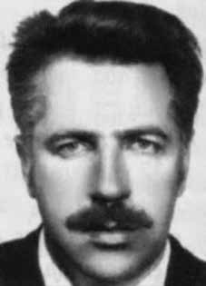

Paulo
Stuart
Wright
CIRCUNSTÂNCIAS DA MORTE
Após pesquisas realizadas pela Comissão Nacional da Verdade, chegou-se à conclusão de que existem duas possibilidades para o esclarecimento da trama que envolve o desaparecimento de Paulo Stuart Wright. A primeira possibilidade apontada pelos esforços de pesquisa destacam que Paulo Stuart teria sido sequestrado ilegalmente nos primeiros dias do mês de setembro de 1973, na cidade de São Paulo, e conduzido para o DOI-CODI do II Exército na capital paulista.
A segunda versão para o desaparecimento desse militante indica que ele poderia ter sido vítima das ações ilegais e arbitrárias levadas à cabo pelos agentes do DOI-CODI do IV Exército. De fato, sabe-se que desde esse período Paulo permanece desaparecido. Apesar das denúncias de que Paulo havia sido sequestrado ilegalmente e que se encontrava sob a jurisdição do II Exército, o Estado brasileiro à época negou a prisão de Paulo.
Passados mais de 40 anos, as pesquisas realizadas pela Comissão Nacional da Verdade revelaram a existência de inúmeros elementos de convicção que permitem apontar que as negativas apresentadas pelo Estado para a prisão desse militante representavam artifícios, cujo objetivo era ocultar a ocorrência de graves violações de direitos humanos.
Após a prisão de Paulo, o advogado José Carlos Dias, que à época atuou na defesa de presos políticos, impetrou habeas corpus em favor de Paulo Stuart Wright e de Pedro João Tinn, nome falso usado por Paulo na clandestinidade. O advogado, que havia sido contratado por Jaime Wright, pastor presbiteriano e irmão de Paulo, apresentou ao Superior Tribunal Militar (STM) declarações de Maria Diva de Farias, que estivera com Paulo na sala de identificação do DOI-CODI/SP.
Temendo pela vida da testemunha, Dias apresentou o depoimento que colheu dela em uma sessão secreta no Superior Tribunal Militar. O Tribunal ordenou que o Exército informasse a localização de Paulo Stuart, mas o Exército negou que ele tenha passado pelo DOI-CODI/SP. De acordo com o testemunho de Osvaldo Rocha, ex-militante da Ação Popular Marxista-Leninista (APML), Paulo Wright foi preso no início de setembro de 1973 em São Paulo e levado para o DOI-CODI do II Exército.
O senhor Osvaldo Rocha testemunhou que estava junto com Paulo em um trem que seguia de São Paulo a Mauá, na grande São Paulo, quando perceberam que estavam sendo seguidos por agentes da repressão. Osvaldo desceu do trem e Paulo disse que desceria no próximo ponto. Algum tempo depois, quando Osvaldo chegou a casa, foi preso por policiais e conduzido às dependências do DOI-CODI do II Exército. Naquela delegacia, foi imediatamente despido e barbaramente torturado. Nessa ocasião, viu no chão da sala de tortura em que se encontrava a mesma blusa que Paulo usava momentos antes, quando estavam juntos no trem.
De acordo com o Dossiê Ditadura: mortos e desaparecidos políticos no Brasil (1964- 1985): Sua família apelou ao Departamento de Estado e ao Senado norte-americanos, uma vez que Paulo Stuart Wright tinha dupla cidadania. Igrejas, advogados, movimentos internacionais de direitos humanos, imprensa de outros países denunciaram o desaparecimento de Paulo Stuart Wright, sem nenhum resultado.
A denúncia de seu desaparecimento provocou a instauração do caso 1.789 na Comissão Interamericana de Direitos Humanos da OEA. A comunicação do caso chegou na CIDH em 30 de outubro de 1973, acusando a ocorrência de sua prisão arbitrária em setembro daquele ano. Em maio de 1975, durante a 35ª sessão da CIDH, decidiu-se pela não continuidade do processo, em razão da falta de informações que deveriam ter sido fornecidas pelo governo brasileiro. Ainda em 1973, sua morte foi denunciada por meio da apelação 40.617 perante a Justiça Militar pelos presos políticos Beatriz de Valle Bargieri e Otto José Mattos Filgueiras. Em 29 de junho de 1974, foi publicada uma nota oficial do MDB, no jornal Diário de Brasília, indagando do governo o destino de 11 presos políticos desaparecidos, entre os quais Paulo.
Seu nome figurou na nota do ministro da Justiça, Armando Falcão, de fevereiro e 1975, em que é dado como foragido. O Coletivo Catarinense de Memória, Verdade e Justiça organizou, com apoio da Comissão de Direitos Humanos da Assembleia Legislativa e da Comissão Estadual da Memória e Verdade Dom Hélder Câmara, de Pernambuco, a Semana Paulo Stuart Wright, de 2 a 7 de setembro de 2013, na cidade de Florianópolis, em homenagem aos 40 anos do desaparecimento de Paulo.
Na ocasião, foram desenvolvidas várias atividades incluindo Audiência Pública sobre o caso e a coleta de depoimentos com a participação da Comissão Nacional da Verdade. Representantes da Comissão Estadual da Memória e Verdade Dom Hélder Câmara, de Pernambuco, entregaram à Comissão Nacional da Verdade uma série de documentos sobre a operação realizada pela repressão, no Recife, para eliminar membros da Ação Popular Marxista-Leninista (APML), organização na qual militava o desaparecido catarinense Paulo Stuart Wright.
A documentação traz detalhes sobre o “Teatrinho da Caxangá”, tiroteio fraudulento montado em 29 de outubro de 1973 para encobrir a real causa das mortes José Carlos da Mata Machado e Gildo Lacerda, militantes da APML, presos, respectivamente, em São Paulo e Salvador, e mortos na capital pernambucana, sob tortura, no DOI-CODI do Recife. Além de Mata Machado e Gildo, Paulo Stuart também é inserido na cena como um terceiro elemento que consegue evadir-se do “tiroteio”. Sabe-se que o suposto tiroteio informado pelas forças de segurança naquela época não ocorreu como descrito ou não ocorreu, uma vez testemunhas afirmam ter visto Gildo morto no DOI.
Os documentos, produzidos pela agência de Recife do Serviço Nacional de Informações (SNI), e que se encontravam no acervo do Arquivo Nacional em Brasília, onde a Comissão Pernambucana realizou pesquisa com apoio da CNV, inserem nesta cena do tiroteio uma pessoa de codinome Antônio ou João Stuart Right que estaria no suposto tiroteio em que a repressão afirma que Machado e Lacerda foram mortos. O documento informa que “Right” fora baleado, mas fugiu.
Os documentos contêm novas pistas que podem indicar a passagem de Stuart Wright por Pernambuco ou que a inclusão de seu nome no “Teatrinho de Caxangá” tenha sido feita para ocultar a real causa de sua morte e desaparecimento em São Paulo. Em documento gerado pela Agência Recife do SNI datado de 30/10/1973 sobre os acontecimentos na Avenida Caxangá aparece a seguinte informação: No ponto entrou o subversivo clandestino João Stuart Right – comando nacional da AP/ML (Ação Popular Marxista Leninista) buscando contato com Mata Machado (Comando Nacional AP/ML) e Gildo Macedo Lacerda (Comando Regional AP/ML) e que pressentindo a operação montada para sua captura e a traição dos seus companheiros, atirou seguidas vezes sobre os mesmos.
De acordo com informação do SNI, o nome verdadeiro de “Antônio”, um dos três personagens do “teatrinho”, era Paulo Stuart Wright e não João Stuart Right. Além da correção, em alguns documentos de monitoramento do SNI, Paulo aparece relacionado ao codinome “Antônio”, que é atribuído ao terceiro elemento do “teatrinho”. Em outro documento de monitoramento do militante, gerado pelo Ministério do Exército, surge a seguinte afirmação: “Em 1973, foi localizado pela polícia de Recife/PE, tendo reagido a tiros e conseguido evadir-se”.
Em documentação do Centro de Informações da Marinha (Cenimar), de 26/5/1972, é afirmado que devido às recentes prisões de elementos da APML em Porto Alegre é de conhecimento desse órgão as mais recentes atividades de Paulo Stuart Wright, cognominado no documento como “João”.
Indicação de que Paulo estava sendo monitorado pelos órgãos de repressão e inteligência antes de seu desaparecimento. Anexado ao processo de José Carlos Novaes Mata Machado na CEMDP, há informação recolhida pelos familiares que indica que foram enterrados no Cemitério da Várzea, em Recife, em 29/10/1973 três indivíduos com identidades desconhecidas lado a lado.
Depoimentos que contam a exumação sigilosa realizada pela família de Mata Machado no cemitério da Várzea, no Recife, para resgatar seu corpo, indicam que ao lado de sua sepultura estava o corpo de Gildo e ao lado um terceiro corpo, não identificado. Jorge Tasso de Souza, advogado, na época, Delegado titular da 3ª Delegacia de Polícia da Capital e responsável pela assinatura de encaminhamento dos corpos de Gildo e Mata Machado ao IML.
Reportou-se a presidente do Grupo Tortura Nunca Mais de Pernambuco em 14 de novembro de 1995, Amparo Almeida Araújo, por meio de uma declaração afirmando que depois do “tiroteio” (indicando aí que os próprios agentes envolvidos na ação se referiam a essa expressão sempre entre aspas) tomou conhecimento, por comentários, de que haveria um terceiro corpo, vítima daquele episódio, que não constava no ofício de encaminhamento, assinado por ele, dos corpos vítimas do acontecido ao IML.
O Grupo Tortura Nunca Mais de Pernambuco, em 10 de novembro de 1995, solicitou ao Secretário de Segurança Pública do Estado de Pernambuco, Antônio Moraes, que localizassem as fotos dos mortos no “tiroteio” e a identificação do terceiro corpo que foi encaminhado pelo Instituto Médico Legal (IML) ao cemitério da Várzea.
A confirmação da morte de Paulo só apareceu dez anos depois, em 1984, com a abertura dos acervos do DOPS do Paraná. Na ficha de Wright constava a inscrição “falecido”.
After research carried out by the National Truth Commission, it was concluded that there are two possibilities for clarifying the plot involving the disappearance of Paulo Stuart Wright. The first possibility highlighted by research efforts highlights that Paulo Stuart had been illegally kidnapped in the first days of September 1973, in the city of São Paulo, and taken to the DOI-CODI of the II Army in the capital of São Paulo.
The second version of this militant's disappearance indicates that he could have been a victim of illegal and arbitrary actions carried out by DOI-CODI agents of the Fourth Army. In fact, it is known that Paulo has remained missing since this period. Despite allegations that Paulo had been illegally kidnapped and that he was under the jurisdiction of the Second Army, the Brazilian State at the time denied Paulo's arrest.
More than 40 years later, research carried out by the National Truth Commission revealed the existence of numerous elements of conviction that allow us to point out that the denials presented by the State for the arrest of this militant represented artifices, the aim of which was to hide the occurrence of serious human rights violations.
After Paulo's arrest, lawyer José Carlos Dias, who at the time worked in the defense of political prisoners, filed habeas corpus in favor of Paulo Stuart Wright and Pedro João Tinn, a false name used by Paulo in hiding. The lawyer, who had been hired by Jaime Wright, a Presbyterian pastor and brother of Paulo, presented to the Superior Military Court (STM) statements from Maria Diva de Farias, who had been with Paulo in the DOI-CODI/SP identification room.
Fearing for the witness's life, Dias presented the testimony he took from her in a secret session at the Superior Military Court. The Court ordered the Army to inform Paulo Stuart's location, but the Army denied that he had passed through DOI-CODI/SP. According to the testimony of Osvaldo Rocha, a former militant of the Marxist-Leninist Popular Action (APML), Paulo Wright was arrested in early September 1973 in São Paulo and taken to the DOI-CODI of the II Army.
Mr. Osvaldo Rocha testified that he was with Paulo on a train that went from São Paulo to Mauá, in greater São Paulo, when they realized that they were being followed by repression agents. Osvaldo got off the train and Paulo said he would get off at the next stop. Some time later, when Osvaldo arrived home, he was arrested by police officers and taken to the DOI-CODI premises of the II Army. At that police station, he was immediately stripped naked and savagely tortured. On that occasion, he saw the same blouse on the floor of the torture room that Paulo was wearing moments before, when they were together on the train.
According to the Ditadura Dossier: dead and missing politicians in Brazil (1964- 1985): His family appealed to the US State Department and Senate, since Paulo Stuart Wright had dual citizenship. Churches, lawyers, international human rights movements, and the press from other countries reported the disappearance of Paulo Stuart Wright, without any results.
The report of her disappearance led to the opening of case 1,789 at the OAS Inter-American Commission on Human Rights. The case was communicated to the IACHR on October 30, 1973, alleging his arbitrary arrest in September of that year. In May 1975, during the 35th session of the IACHR, it was decided not to continue the process, due to the lack of information that should have been provided by the Brazilian government. Still in 1973, his death was reported through appeal 40,617 before the Military Court by political prisoners Beatriz de Valle Bargieri and Otto José Mattos Filgueiras. On June 29, 1974, an official note from the MDB was published in the newspaper Diário de Brasília, asking the government about the fate of 11 missing political prisoners, including Paulo.
His name appeared in the note from the Minister of Justice, Armando Falcão, from February 1975, in which he was listed as a fugitive. The Santa Catarina Collective of Memory, Truth and Justice organized, with the support of the Human Rights Commission of the Legislative Assembly and the State Commission for Memory and Truth Dom Hélder Câmara, from Pernambuco, the Paulo Stuart Wright Week, from September 2 to 7, 2013, in the city of Florianópolis, in honor of the 40th anniversary of Paulo's disappearance.
On that occasion, several activities were carried out, including a Public Hearing on the case and the collection of statements with the participation of the National Truth Commission. Representatives of the State Commission for Memory and Truth Dom Hélder Câmara, from Pernambuco, handed over to the National Truth Commission a series of documents about the operation carried out by the repression, in Recife, to eliminate members of the Ação Popular Marxista-Leninista (APML), an organization in which the disappeared Paulo Stuart Wright from Santa Catarina was active.
The documentation provides details about the “Teatrinho da Caxangá”, a fraudulent shooting set up on October 29, 1973 to cover up the real cause of the deaths of José Carlos da Mata Machado and Gildo Lacerda, APML militants, arrested, respectively, in São Paulo and Salvador, and killed in the capital of Pernambuco, under torture, at the DOI-CODI in Recife. In addition to Mata Machado and Gildo, Paulo Stuart is also inserted into the scene as a third element who manages to escape the “shooting”. It is known that the alleged shooting reported by security forces at that time did not occur as described or at all, as witnesses claim to have seen Gildo dead at the DOI.
The documents, produced by the Recife agency of the National Information Service (SNI), and which were in the collection of the National Archives in Brasília, where the Pernambuco Commission carried out research with support from the CNV, include in this scene of the shooting a person codenamed Antônio or João Stuart Right who was involved in the alleged shooting in which the repression claims that Machado and Lacerda were killed. The document states that “Right” was shot, but fled.
The documents contain new clues that may indicate Stuart Wright's passage through Pernambuco or that the inclusion of his name in the “Teatrinho de Caxangá” was done to hide the real cause of his death and disappearance in São Paulo. In a document generated by the Recife Agency of the SNI dated 10/30/1973 about the events on Avenida Caxangá, the following information appears: The clandestine subversive João Stuart Right entered the point – national command of the AP/ML (Ação Popular Marxista Leninista) seeking contact with Mata Machado (National Command AP/ML) and Gildo Macedo Lacerda (Regional Command AP/ML) and sensing the operation mounted for his capture and the betrayal of his companions, shot them repeatedly.
According to information from the SNI, the real name of “Antônio”, one of the three characters in the “theater”, was Paulo Stuart Wright and not João Stuart Right. In addition to the correction, in some SNI monitoring documents, Paulo appears related to the codename “Antônio”, which is attributed to the third element of the “teatrinho”. In another document monitoring the militant, generated by the Ministry of the Army, the following statement appears: “In 1973, he was located by the Recife/PE police, having reacted to gunfire and managed to escape”.
In documentation from the Navy Information Center (Cenimar), dated 5/26/1972, it is stated that due to the recent arrests of APML elements in Porto Alegre, this body is aware of the most recent activities of Paulo Stuart Wright, known in the document as “João”.
Indication that Paulo was being monitored by repression and intelligence agencies before his disappearance. Attached to the case of José Carlos Novaes Mata Machado at CEMDP, there is information collected by family members that indicates that three individuals with unknown identities were buried in the Várzea Cemetery, in Recife, on 10/29/1973 side by side.
Testimonies that recount the confidential exhumation carried out by Mata Machado's family in the Várzea cemetery, in Recife, to recover his body, indicate that next to his grave was Gildo's body and next to it a third, unidentified body. Jorge Tasso de Souza, lawyer, at the time, Head Delegate of the 3rd Police Station of the Capital and responsible for signing the transfer of the bodies of Gildo and Mata Machado to the IML.
The president of the Grupo Tortura Nunca Mais de Pernambuco was reported on November 14, 1995, Amparo Almeida Araújo, through a statement stating that after the “shooting” (indicating that the agents involved in the action always referred to this expression in quotation marks) he became aware, through comments, that there would be a third body, a victim of that episode, which was not included in the letter of referral, signed by him, of the bodies victims of what happened to the IML.
The Tortura Nunca Mais de Pernambuco Group, on November 10, 1995, asked the Secretary of Public Security of the State of Pernambuco, Antônio Moraes, to locate the photos of those killed in the “shooting” and the identification of the third body that was sent by the Legal Medical Institute (IML) to the Várzea cemetery.
Confirmation of Paulo's death only appeared ten years later, in 1984, with the opening of the DOPS collections in Paraná. Wright's record said “deceased.”
Luego de investigaciones realizadas por la Comisión Nacional de la Verdad, se concluyó que existen dos posibilidades para esclarecer la trama de la desaparición de Paulo Stuart Wright. La primera posibilidad destacada por las investigaciones destaca que Paulo Stuart hubiera sido secuestrado ilegalmente en los primeros días de septiembre de 1973, en la ciudad de São Paulo, y llevado al DOI-CODI del II Ejército en la capital de São Paulo.
La segunda versión sobre la desaparición de este militante indica que podría haber sido víctima de acciones ilegales y arbitrarias llevadas a cabo por agentes del DOI-CODI del Cuarto Ejército. De hecho, se sabe que Paulo permanece desaparecido desde este período. A pesar de las acusaciones de que Paulo había sido secuestrado ilegalmente y que estaba bajo la jurisdicción del Segundo Ejército, el Estado brasileño en ese momento negó el arresto de Paulo.
Más de 40 años después, investigaciones realizadas por la Comisión Nacional de la Verdad revelaron la existencia de numerosos elementos de convicción que permiten señalar que las negativas presentadas por el Estado para la detención de este militante representaron artificios, cuyo objetivo era ocultar la ocurrencia de graves violaciones a los derechos humanos.
Después del arresto de Paulo, el abogado José Carlos Dias, que en ese momento trabajaba en la defensa de presos políticos, interpuso un habeas corpus a favor de Paulo Stuart Wright y Pedro João Tinn, nombre falso utilizado por Paulo en la clandestinidad. El abogado, que había sido contratado por Jaime Wright, pastor presbiteriano y hermano de Paulo, presentó ante el Tribunal Superior Militar (STM) declaraciones de María Diva de Farias, quien había estado con Paulo en la sala de identificación del DOI-CODI/SP.
Temiendo por la vida de la testigo, Dias presentó el testimonio que le tomó en una sesión secreta en el Tribunal Superior Militar. El Tribunal ordenó al Ejército informar la ubicación de Paulo Stuart, pero el Ejército negó que hubiera pasado por el DOI-CODI/SP. Según el testimonio de Osvaldo Rocha, ex militante de la Acción Popular Marxista-Leninista (APML), Paulo Wright fue detenido a principios de septiembre de 1973 en São Paulo y trasladado al DOI-CODI del II Ejército.
El señor Osvaldo Rocha declaró que estaba con Paulo en un tren que iba de São Paulo a Mauá, en el gran São Paulo, cuando se dieron cuenta de que estaban siendo seguidos por agentes de represión. Osvaldo se bajó del tren y Paulo dijo que se bajaría en la siguiente parada. Tiempo después, cuando Osvaldo llegó a su casa, fue detenido por agentes policiales y trasladado a las instalaciones del DOI-CODI del II Ejército. En esa comisaría fue inmediatamente desnudado y salvajemente torturado. En esa ocasión vio en el suelo de la sala de tortura la misma blusa que Paulo llevaba momentos antes, cuando estaban juntos en el tren.
Según el Dossier Ditadura: políticos muertos y desaparecidos en Brasil (1964-1985): Su familia apeló al Departamento de Estado y al Senado de Estados Unidos, ya que Paulo Stuart Wright tenía doble ciudadanía. Iglesias, abogados, movimientos internacionales de derechos humanos y prensa de otros países denunciaron la desaparición de Paulo Stuart Wright, sin resultados.
La denuncia de su desaparición motivó la apertura del caso 1.789 ante la Comisión Interamericana de Derechos Humanos de la OEA. El caso fue comunicado a la CIDH el 30 de octubre de 1973, alegando su detención arbitraria en septiembre de ese año. En mayo de 1975, durante el 35º período de sesiones de la CIDH, se decidió no continuar con el proceso, debido a la falta de información que debería haber sido proporcionada por el gobierno brasileño. Aún en 1973, su muerte fue denunciada mediante el recurso 40.617 ante el Tribunal Militar por los presos políticos Beatriz de Valle Bargieri y Otto José Mattos Filgueiras. El 29 de junio de 1974, se publicó una nota oficial del MDB en el periódico Diário de Brasília, preguntando al gobierno sobre la suerte de 11 presos políticos desaparecidos, entre ellos Paulo.
Su nombre figuraba en la nota del Ministro de Justicia, Armando Falcão, de febrero de 1975, en la que figuraba como prófugo. El Colectivo Santa Catarina de Memoria, Verdad y Justicia organizó, con el apoyo de la Comisión de Derechos Humanos de la Asamblea Legislativa y de la Comisión Estatal para la Memoria y la Verdad Dom Hélder Câmara, de Pernambuco, la Semana Paulo Stuart Wright, del 2 al 7 de septiembre de 2013, en la ciudad de Florianópolis, en homenaje al 40º aniversario de la desaparición de Paulo.
En esa oportunidad se realizaron varias actividades, entre ellas una Audiencia Pública sobre el caso y la recolección de declaraciones con la participación de la Comisión Nacional de la Verdad. Representantes de la Comisión Estatal para la Memoria y la Verdad Dom Hélder Câmara, de Pernambuco, entregaron a la Comisión Nacional de la Verdad una serie de documentos sobre la operación llevada a cabo por la represión, en Recife, para eliminar a miembros de la Acción Popular Marxista-Leninista (APML), organización en la que militaba el desaparecido Paulo Stuart Wright, de Santa Catarina.
La documentación proporciona detalles sobre el “Teatrinho da Caxangá”, un tiroteo fraudulento organizado el 29 de octubre de 1973 para encubrir la verdadera causa de las muertes de José Carlos da Mata Machado y Gildo Lacerda, militantes de la APML, detenidos, respectivamente, en São Paulo y Salvador, y asesinados en la capital de Pernambuco, bajo tortura, en el DOI-CODI de Recife. Además de Mata Machado y Gildo, también se inserta en escena Paulo Stuart como un tercer elemento que logra escapar del “tiroteo”. Se sabe que el presunto tiroteo reportado por las fuerzas de seguridad en ese momento no ocurrió como se describe o no ocurrió en absoluto, ya que testigos afirman haber visto a Gildo muerto en el DOI.
Los documentos, elaborados por la agencia Recife del Servicio Nacional de Información (SNI), y que se encontraban en la colección del Archivo Nacional de Brasilia, donde la Comisión de Pernambuco realizó investigaciones con apoyo de la CNV, incluyen en esta escena del tiroteo a una persona con el nombre clave de Antônio o João Stuart Derecha, quien estuvo involucrado en el presunto tiroteo en el que la represión afirma que fueron asesinados Machado y Lacerda. El documento señala que “Derecha” recibió un disparo, pero huyó.
Los documentos contienen nuevas pistas que pueden indicar el paso de Stuart Wright por Pernambuco o que la inclusión de su nombre en el “Teatrinho de Caxangá” fue hecha para ocultar la verdadera causa de su muerte y desaparición en São Paulo. En un documento generado por la Agencia Recife del SNI del 30/10/1973 sobre los hechos ocurridos en la Avenida Caxangá, aparece la siguiente información: El clandestino subversivo João Stuart Derecha entró en el punto – comando nacional de la AP/ML (Ação Popular Marxista Leninista) buscando contacto con Mata Machado (Comando Nacional AP/ML) y Gildo Macedo Lacerda (Comando Regional AP/ML) y presintiendo la operación montada para su captura y la traición. de sus compañeros, les disparó en repetidas ocasiones.
Según informaciones del SNI, el verdadero nombre de “Antônio”, uno de los tres personajes del “teatro”, era Paulo Stuart Wright y no João Stuart Right. Además de la corrección, en algunos documentos de seguimiento del SNI, Paulo aparece relacionado con el nombre clave “Antônio”, que se atribuye al tercer elemento del “teatrinho”. En otro documento de seguimiento del militante, elaborado por el Ministerio del Ejército, aparece la siguiente declaración: “En 1973, fue localizado por la policía de Recife/PE, habiendo reaccionado a los disparos y logró escapar”.
En documentación del Centro de Información de la Marina (Cenimar), de fecha 26/05/1972, se afirma que debido a las recientes detenciones de elementos de la APML en Porto Alegre, este organismo tiene conocimiento de las más recientes actividades de Paulo Stuart Wright, conocido en el documento como “João”.
Indicación de que Paulo estaba siendo monitoreado por agencias de represión y de inteligencia antes de su desaparición. Adjunto al caso de José Carlos Novaes Mata Machado en el CEMDP, hay información recabada por familiares que indica que tres personas de identidad desconocida fueron sepultadas en el Cementerio de Várzea, en Recife, el 29/10/1973, una al lado de la otra.
Testimonios que relatan la exhumación confidencial realizada por la familia de Mata Machado en el cementerio de Várzea, en Recife, para recuperar su cuerpo, indican que junto a su tumba se encontraba el cuerpo de Gildo y junto a él un tercer cuerpo no identificado. Jorge Tasso de Souza, abogado, en su momento Jefe Delegado de la Comisaría 3ª de la Capital y responsable de firmar el traslado de los cuerpos de Gildo y Mata Machado al IML.
La presidenta del Grupo Tortura Nunca Mais de Pernambuco fue denunciada el 14 de noviembre de 1995, Amparo Almeida Araújo, a través de un comunicado afirmando que después del “tiroteo” (indicando que los agentes involucrados en la acción siempre se referían a esa expresión entre comillas) se dio cuenta, a través de comentarios, que habría un tercer cuerpo, víctima de ese episodio, que no estaba incluido en la carta de remisión, firmada por él, de los cuerpos víctimas de lo sucedido al IML.
El Grupo Tortura Nunca Mais de Pernambuco, el 10 de noviembre de 1995, solicitó al Secretario de Seguridad Pública del Estado de Pernambuco, Antônio Moraes, la localización de las fotografías de los fallecidos en el “tiroteo” y la identificación del tercer cadáver que fue enviado por el Instituto Médico Legal (IML) al cementerio de Várzea.
La confirmación de la muerte de Paulo sólo apareció diez años después, en 1984, con la apertura de las colecciones del DOPS en Paraná. El registro de Wright decía "fallecido".